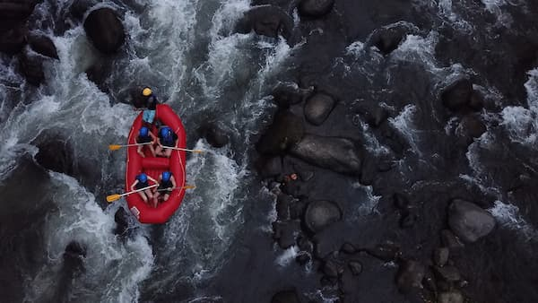
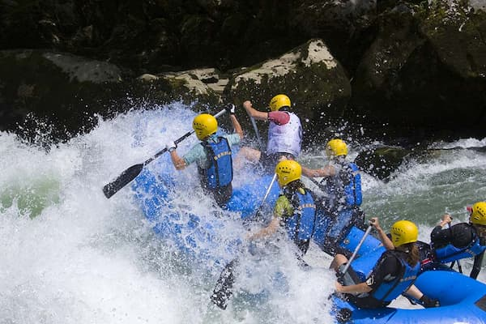

Nossa missão é proporcionar aventuras inesquecíveis com segurança, diversão e respeito à natureza. Buscamos criar experiências únicas para famílias, amigos e aventureiros de todas as idades.

Nossa missão é proporcionar aventuras inesquecíveis com segurança, diversão e respeito à natureza. Buscamos criar experiências únicas para famílias, amigos e aventureiros de todas as idades.
A Corredeiras Adventure nasceu da paixão por esportes de aventura e pelo desejo de proporcionar experiências inesquecíveis em meio à natureza. Desde o início, nossa missão é oferecer passeios seguros, emocionantes e acessíveis para pessoas de todas as idades.



